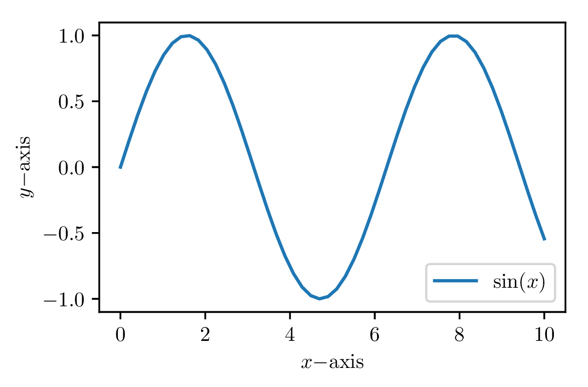

Abstract
PythonTeX allows you to run Python code from within LaTeX documents and automatically include the output. This document serves as an example of what is possible with PythonTeX.∗
We can typeset code that is passed to Python, and bring back the results.
This can be simple. For example, print('Python says hi!')
returns the following:
Python says hi!
Or we could access the printed content verbatim (it might contain special characters):
Python interaction can also be more complex.
print(str(2**2**2) + r'\endinput') returns
16. In this case, the printed result includes LaTeX code, which is correctly interpreted by LaTeX to
ensure that there is not an extra space after the 16. Printed output is saved to a file and brought back in
via \input, and the \endinput command stops input immediately, before LaTeX gets to the end of the
line and inserts a space character there, after the 16.
Printing works, but as the last example demonstrates, you have to be careful about spacing if you have
text immediately after the printed content. In that case, it’s usually best to assemble text within a
PythonTeX environment and store the text in a variable. Then you can bring in the text later, using the
\py command.
The \py
command brings in a string representation of its argument. First we create the text.
Then we bring it in: .
The \py
command can even bring in verbatim content.
We don’t have to typeset the code we’re executing. It can be hidden. And then we can access it later:
This is a message from Python.
It is also possible to perform variable substitution or string interpolation. The earlier result could be
recreated: .
PythonTeX supports syntax highlighting via Pygments. Any language supported by Pygments can be highlighted. Unicode is supported. Consider this snippet copied and pasted from a Python 3 interactive session. (Using random strings of Unicode for variable names is probably not a good idea, but PythonTeX will happily highlight it for you.)
There is also a Pygments command for inline use:
\pygment.
PythonTeX includes an environment that emulates a Python interactive session. Commands are entered within the environment, each line is treated as input to an interactive session, and the result is typeset.
It is possible to refer to the values of console variables later on in inline contexts, using the
\pycon command. For
example, the value of
was 468.
PythonTeX allows us to perform algebraic manipulations with SymPy and then properly typeset the results.
We create three variables, and define in terms of the other two.
Now we can access what is equal to:
Many things are possible, including some very nice calculus.
It’s easy to use arbitrary symbols in equations.
We can create plots with matplotlib, perfectly matching the plot fonts with the document fonts. No more searching for the code that created a figure!
It is possible to pass page dimensions and similar contextual information from the LaTeX side to the Python
side. If you want your figures to be, for example, a particular fraction of the page width, you can pass the value of
\textwidth to the Python side, and use it
in creating your figures. See \setpythontexcontext
in the main documentation for details.
You may want to use matplotlib’s PGF backend when creating plots.

PythonTeX allows some amazing document automation, such as this derivative and integral table. Try typing that by hand, fast!
Using SymPy, it is possible to typeset step-by-step solutions. In this particular case, we also use the mdframed package to place a colored background behind our code.
Step-by-Step Integral Evaluation
PythonTeX allows code to be typset next to the stderr it produces. This requires the package option makestderr.
This code causes a syntax error:
The package option stderrfilename allows the file name that appears in the error message to be customized.
∗Since PythonTeX runs Python code (and potentially other code) on your computer, documents using PythonTeX have a greater potential for security risks than do standard LaTeX documents. You should only compile PythonTeX documents from sources you trust.